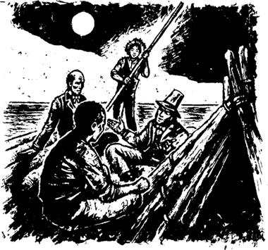
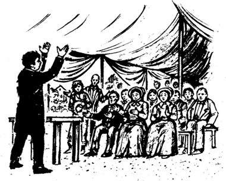
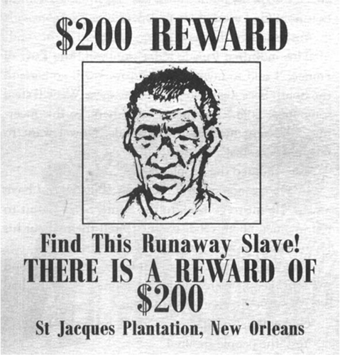

6

Nhà vua và Công tước
Chẳng mấy chốc trời tối sầm và bè lại thong dong trôi theo dòng sông. Tôi quan sát những vị khách của mình. Một trong hai người đó khoảng sáu mươi tuổi. Ông già và hói. Người còn lại thì tầm ba mươi. Người này cao và đẹp trai.
‘Hai người là ai?’ Tôi hỏi. ‘Tại sao những người đàn ông kia lại săn đuổi hai người vậy?’
Người đàn ông già trả lời trước.
‘Cuộc đời của tôi gian truân lắm,’ ông ta nói. ‘Tôi không phải là người Mỹ. Tôi là Vua nước Pháp.’
Tôi quan sát ông ta một cách cẩn thận. Quần áo của ông ta cũ kĩ và bẩn thỉu.
‘Khi còn trẻ, tôi đã rời Pháp,’ ông ta nói. ‘Người dân Pháp đã làm cách mạng. Họ sát hại cha tôi.’
‘Ngài Vua nói tiếng Anh giỏi đấy,’ tôi nói.
‘Phải,’ ông ta đáp lại. ‘Tôi phải nhanh chóng rời khỏi nước Pháp. Hồi đó tôi còn trẻ. Tôi đã quên mất tiếng Pháp rồi. Bây giờ tôi không thể nói tiếng Pháp nữa. Tôi đã đến đất nước này cách đây rất lâu. Bây giờ tôi đi từ thành phố này sang thành phố khác. Tôi kể cho mọi người về Chúa. Tôi kể cho họ về cuộc đời tôi. Nhưng một ngày nào đó, người Pháp sẽ cần đến tôi. Đến lúc đó, tôi sẽ trở về quê hương. Một ngày nào đó, tôi sẽ là Vua ở Paris.’
Tôi nhìn người đàn ông trẻ hơn.
‘Ngài cũng là người Pháp sao?’ Tôi hỏi.
‘Không,’ ông ta đáp lời. ‘Tôi là người Anh. Tôi là Công tước. Tôi là Công tước xứ Bridgewater.’
‘Ngài có phải cũng rời bỏ _quê hương_ của mình?’ Tôi hỏi.
‘Phải,’ ông ta nói. ‘Một số kẻ độc ác đã cướp tiền bạc và đất đai của tôi. Bây giờ tôi sống ở đất nước của cậu và làm việc ở đây. Nhiều năm trước, tôi làm thợ in. Tôi làm việc cho một tờ báo. Nhưng bây giờ tôi là diễn viên. Tôi diễn các vở kịch của William Shakespeare. Tôi diễn tại các thị trấn và làng mạc bên sông. Tôi cố gắng mang đến những điều tươi đẹp cho những con người bình thường này! Nhưng đôi khi họ lại cố gắng tấn công tôi. Tại sao ư? Tôi không biết câu trả lời.’

Chẳng mấy chốc, hai người đàn ông kia muốn đi ngủ.
‘Ta là một vị Vua,’ người đàn ông lớn tuổi nói. ‘Ta phải ngủ trong túp lều.’
‘Còn ta là một Công tước,’ người đàn ông trẻ hơn nói. ‘Ta cũng phải ngủ trong túp lều.’
Tôi không vui vì chuyện này. Nhưng Jim lại đồng ý với những vị khách của chúng tôi. Jim và tôi phải ngủ bên ngoài túp lều. Trời rất lạnh.
‘Những vị vua của nước Pháp và những công tước của nước Anh đều là những người tốt, Huck ạ,’ Jim nói. ‘Không hề có nô lệ nào trong đất nước của họ.’
Tôi không nói gì cả. Tôi biết sự thật. Người đàn ông lớn tuổi kia không phải là vua và ông ta cũng không phải là người Pháp. Người đàn ông trẻ hơn thì không phải là công tước và cũng không phải là người Anh. Tôi biết rõ thế. Cả hai đều là người Mỹ. Chúng là những kẻ lừa đảo. Chúng nói dối người khác và lừa gạt họ. Chúng muốn mọi người đưa tiền cho chúng. Nhưng tôi không muốn kể cho Jim biết về chuyện này. Jim rất tin tưởng những vị khách của chúng tôi. Jim là một người tốt và luôn tin vào những câu chuyện của mọi người.
Hai tên lừa đảo kia là những tên tội phạm. Và chúng cũng là những kẻ bỏ trốn. Nhưng tôi không quan tâm đến điều đó. Jim và tôi cũng là những kẻ bỏ trốn mà.
Sáng hôm sau, nhà vua và công tước bắt đầu hỏi tôi về Jim.
‘Nó có phải là một nô lệ bỏ trốn không?’ Chúng hỏi.
Tôi suy nghĩ một lúc. Missouri và Illinois nằm sau lưng chúng tôi. Bang Arkansas ở bờ phía tây của dòng sông còn bang Tennessee ở bờ phía đông. Nhưng đó cũng là những bang có chế độ nô lệ. Tôi không tin những vị khách của chúng tôi. Chúng định bán Jim sao? Chúng định đưa Jim về với cô Watson sao? Chúng muốn được nhận tiền thưởng sao? Tôi không biết. Nhưng tôi không tin chúng!
‘Chúng ta cần hết sức cẩn thận,’ tôi nghĩ. Tôi không kể với chúng sự thật về Jim. Tôi nói lạc đi một câu chuyện khác. Nhưng chẳng mấy chốc, hai tên lừa đảo kia lại muốn được giải đáp một thắc mắc khác.
‘Tại sao các cậu không đi lại vào ban ngày,’ Công tước nói. ‘Tại sao vậy?’
‘Tôi lo cho Jim,’ tôi đáp lời. ‘Tôi không muốn ai nhìn thấy nó. Mọi người ở đây không biết về những người da đen được tự do. Họ nói, “Tất cả những người da đen đều là nô lệ”. Họ sẽ cố bắt nó lại. Họ sẽ cố bán nó.’
Cuối buổi sáng hôm đó, nhà vua và công tước đi dạo đến một thị trấn nhỏ gần bờ sông. Tôi cũng đi cùng chúng nhưng Jim thì ở lại trên bè.
Không có ai ở trong thị trấn cả. Thật là lạ! Nhưng chúng tôi thấy một thông báo trên tường của một cửa hàng. Và sau đó chúng tôi hiểu ra. Mọi người đã đi hết đến một buổi lễ tôn giáo trong một cái lều to, cách nửa dặm.
Chúng tôi đi đến văn phòng của tờ báo địa phương. Công tước xứ Bridgewater cẩn thận quan sát qua cửa sổ. Không có ai bên trong.
‘Cậu phải đi cùng Nhà vua, Huck ạ,’ anh ta nói với tôi. ‘Ta định sử dụng máy in của tờ báo đó.’
Công tước đi vào văn phòng. Còn tôi thì đi cùng Nhà vua nước Pháp đến buổi lễ tôn giáo trong cái lều to kia.
Bên trong lều, vị mục sư đang nói với mọi người về Chúa. Ông ta hét và đập tay xuống bàn.
‘Chúa yêu tất cả các con!’ Vị mục sư hét to. ‘Chúa yêu những người tốt. Và Người cũng yêu những người xấu. Nhưng những người xấu phải ăn năn tội lỗi của mình.’
Một số người trong lều hét lên ‘Đúng!’
‘Những người xấu phải kể với Chúa về những tội lỗi của mình,’ vị mục sư nói. ‘Và họ cũng phải kể với bạn bè và hàng xóm về những tội lỗi của mình. Họ phải ăn năn tội lỗi của mình. Họ phải nói, “Con xin lỗi!” Họ phải nói lời đó với Chúa, với bạn bè và hàng xóm của họ!’
‘Đúng!’ Những người kia lại hét lên.

Đột nhiên, Nhà vua nước Pháp giơ tay lên.
‘Sao ngài lại làm thế?’ Tôi hỏi.
‘Ta đang định ăn năn tội lỗi,’ ông ta đáp nhỏ. ‘Chúng ta có thể kiếm được ít tiền từ những con người tốt bụng này!’
Nhà vua tiến tới chỗ vị mục sư.
‘Ta đã từng là một người xấu,’ ông ta nói. ‘Ta từng là một tên cướp biển ở Nam Thái Bình Dương. Đội quân của ta đã lấy trộm vàng từ người khác. Ta đến Mỹ cùng với rất nhiều tiền. Nhưng ta đã tiêu hết toàn bộ số tiền đó. Bây giờ ta không còn xu nào cả.’
Nhà vua quay sang những người có mặt trong lều.
‘Chúa đã lấy mất tiền bạc của ta!’ Ông ta hét lên. ‘Bây giờ ta biết điều đó rồi. Chúa muốn ta ăn năn tội lỗi của mình.’
‘Đúng!’ Mọi người hét lên.
‘Sáng nay, ta đã đưa ra một quyết định,’ Nhà vua nước Pháp nói. ‘Ta đã tự nhủ với lòng mình rằng “Ngày mai, ta sẽ quay trở lại Nam Thái Bình Dương. Ta sẽ trở về với đội quân của mình. Chúng ta sẽ lại đánh cắp thêm vàng nữa”. Nhưng sau đó ta đã đến đây, đến với buổi lễ này. Chúa đã gửi ta đến đây, những người bạn của ta ạ. Bây giờ ta muốn ăn năn tội lỗi của mình!’
‘Đúng!’ Mọi người hét lên.
‘Ta không có tiền,’ Nhà vua nói. ‘Nhưng hôm nay, ta có một kế hoạch. Ta muốn trở lại Nam Thái Bình Dương. Ta muốn kể cho những người đàn ông của mình về Chúa. Ta muốn kể cho họ về tình yêu của Người. Ta muốn những người đàn ông của mình ăn năn tội lỗi của họ.’
Khoảnh khắc sau, vị mục sư đi khắp lều. Mọi người đều đưa tiền cho ông ta. Chẳng mấy chốc, ông ta đã kiếm được 87 đô la. Ông ta đưa số tiền đó cho Nhà vua.
‘Chúa sẽ giúp con, người anh em yêu quý ạ,’ ông ta nói.
‘Đúng!’ Mọi người hét lên.
‘Hãy mang tình yêu của Chúa đến cho những tên cướp biển ở Nam Thái Bình Dương!’ Vị mục sư nói.
‘Đúng!’ Mọi người lại hét lên.
Chúng tôi trở về bè. Nhà vua có 87 đô la và rất vui sướng. Công tước đang đợi chúng tôi ở bè. Anh ta đưa chúng tôi xem một tờ giấy lớn. Có một vài chữ và một bức ảnh lớn trên đó. Đó là thông báo về phần thưởng. Công tước đã in thông báo đó ở văn phòng của tờ báo.
